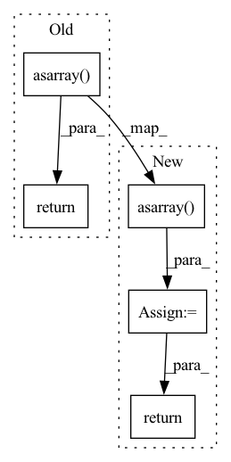

Pattern ID :23715
Before Change
raise FileNotFoundError(f"unable to access {file}")
// Rasterise pages to PIL images with pypdfium2 and convert to numpy ndarrays
return [np.asarray( img) for img, _ in pdfium.render_pdf_topil(file, scale=scale, **kwargs)]
After Change
// Rasterise pages to PIL images with pypdfium2 and convert to numpy ndarrays
pdf = pdfium.PdfDocument(file, password=password)
pages = [np.asarray( img) for img in pdf.render_topil(scale=scale, **kwargs)]
pdf.close()
return pages
In pattern: SUPERPATTERN
Frequency: 8
Non-data size: 5
Instances Fragment ID: 73922359
Project Name: mindee/doctr
Commit Name: 4caeee3d724cd5004dd1996ee5750b01582ad9fc
Time: 2022-06-09
Author: geisserml@gmail.com
File Name: doctr/io/pdf.py
M Class Name: AnonimousClass
N Class Name: AnonimousClass
M Method Name: read_pdf(3)
N Method Name: read_pdf(2)
M Parent Class:
N Parent Class:
M File Name: doctr/io/pdf.py
N File Name: doctr/io/pdf.py
M Start Line: 34
M End Line: 42
N Start Line: 20
N End Line: 48
Before Change
ymin = np.abs(valid_keypoints[:, :, 1]).min()
xmax = valid_keypoints[:, :, 0].max()
ymax = valid_keypoints[:, :, 1].max()
return np.asarray( [[xmin, ymin, xmax, ymax]])
After Change
ymin = np.abs(valid_keypoints[:, :, 1]).min()
xmax = valid_keypoints[:, :, 0].max()
ymax = valid_keypoints[:, :, 1].max()
bboxes = np.asarray( [[xmin, ymin, xmax, ymax]])
return bboxes
Fragment ID: 73922358
Project Name: aisingapore/peekingduck
Commit Name: bb6cf0a3da6b7b4ddac4dc7eb896b55d62a7bf18
Time: 2021-12-07
Author: 61336482+ongzizhao@users.noreply.github.com
File Name: peekingduck/pipeline/nodes/model/movenetv1/movenet_files/predictor.py
M Class Name: Predictor
N Class Name: Predictor
M Method Name: _get_bbox_from_keypoints(1)
N Method Name: _get_bbox_from_keypoints(1)
M Parent Class:
N Parent Class:
M File Name: peekingduck/pipeline/nodes/model/movenetv1/movenet_files/predictor.py
N File Name: peekingduck/pipeline/nodes/model/movenetv1/movenet_files/predictor.py
M Start Line: 302
M End Line: 302
N Start Line: 351
N End Line: 353
Before Change
)
)
all_connections.append(connections)
return np.asarray( all_connections)
@staticmethod
def _get_keypoints_coords(
keypoints: np.ndarray,After Change
)
)
all_connections.append(connections)
keypoint_conns = np.asarray( all_connections)
return keypoint_conns
@staticmethod
def _get_keypoints_coords( Fragment ID: 73922365
Project Name: aisingapore/peekingduck
Commit Name: bb6cf0a3da6b7b4ddac4dc7eb896b55d62a7bf18
Time: 2021-12-07
Author: 61336482+ongzizhao@users.noreply.github.com
File Name: peekingduck/pipeline/nodes/model/movenetv1/movenet_files/predictor.py
M Class Name: Predictor
N Class Name: Predictor
M Method Name: _get_connections_of_poses(2)
N Method Name: _get_connections_of_poses(2)
M Parent Class:
N Parent Class:
M File Name: peekingduck/pipeline/nodes/model/movenetv1/movenet_files/predictor.py
N File Name: peekingduck/pipeline/nodes/model/movenetv1/movenet_files/predictor.py
M Start Line: 239
M End Line: 250
N Start Line: 266
N End Line: 279
Before Change
c = 2 * prototype_filter
filters.append(c * np.cos(a + b))
return np.asarray( filters) , is_converged
class PseudoQuadratureMirrorFilterBanks(nn.Module):After Change
b = (-1) ** k * (np.pi / 4) * sign
c = 2 * prototype_filter
filters.append(c * np.cos(a + b))
filters = np.asarray( filters)
return filters, is_converged
class PseudoQuadratureMirrorFilterBanks(nn.Module): Fragment ID: 73922363
Project Name: sp-nitech/diffsptk
Commit Name: 77097579028818dc41cea60b3bbbc97280c4ec72
Time: 2023-04-20
Author: takenori.yoshimura24@gmail.com
File Name: diffsptk/core/pqmf.py
M Class Name: AnonimousClass
N Class Name: AnonimousClass
M Method Name: make_filter_banks(8)
N Method Name: make_filter_banks(8)
M Parent Class:
N Parent Class:
M File Name: diffsptk/core/pqmf.py
N File Name: diffsptk/core/pqmf.py
M Start Line: 64
M End Line: 101
N Start Line: 101
N End Line: 139
Before Change
pt += np.array([d_x, d_y])
candidates.append(pt)
return np.unique(np.asarray( candidates) , axis=0)
@staticmethod
def get_candidate_gt(target_candidate, gt_target):After Change
for j in range(num_c):
pt += np.array([d_x, d_y])
candidates.append(copy.deepcopy(pt))
candidates = np.unique(np.asarray( candidates) , axis=0)
if viz:
fig = plt.figure(0, figsize=(8, 7))
fig.clear()
for centerline_coords in centerline_list:
visualize_centerline(centerline_coords)
plt.scatter(candidates[:, 0], candidates[:, 1], marker="*", c="g", alpha=1, s=6.0, zorder=15)
plt.xlabel("Map X")
plt.ylabel("Map Y")
plt.axis("off")
plt.title("No. of lane candidates = {}; No. of target candidates = {};".format(len(centerline_list), len(candidates)))
plt.show(block=False)
return candidates
@staticmethod
def get_candidate_gt(target_candidate, gt_target): Fragment ID: 73922362
Project Name: henry1iu/tnt-trajectory-prediction
Commit Name: 158b8908496b1bcd8d780c31b641d395ef261a2f
Time: 2021-07-28
Author: liu.jb.henry@gmail.com
File Name: core/util/preprocessor/base.py
M Class Name: Preprocessor
N Class Name: Preprocessor
M Method Name: lane_candidate_sampling(3)
N Method Name: lane_candidate_sampling(2)
M Parent Class: object
N Parent Class: object
M File Name: core/util/preprocessor/base.py
N File Name: core/util/preprocessor/base.py
M Start Line: 139
M End Line: 158
N Start Line: 138
N End Line: 174